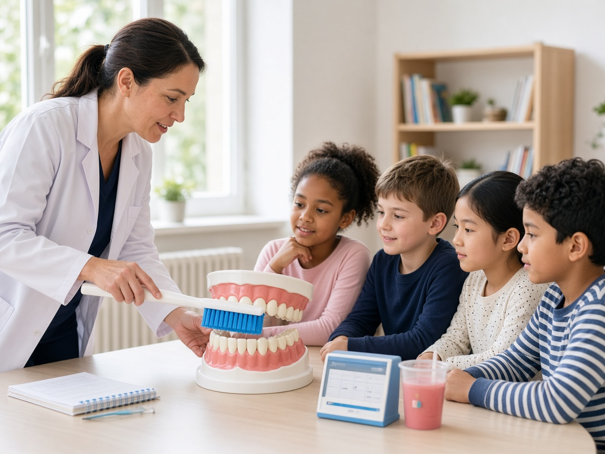
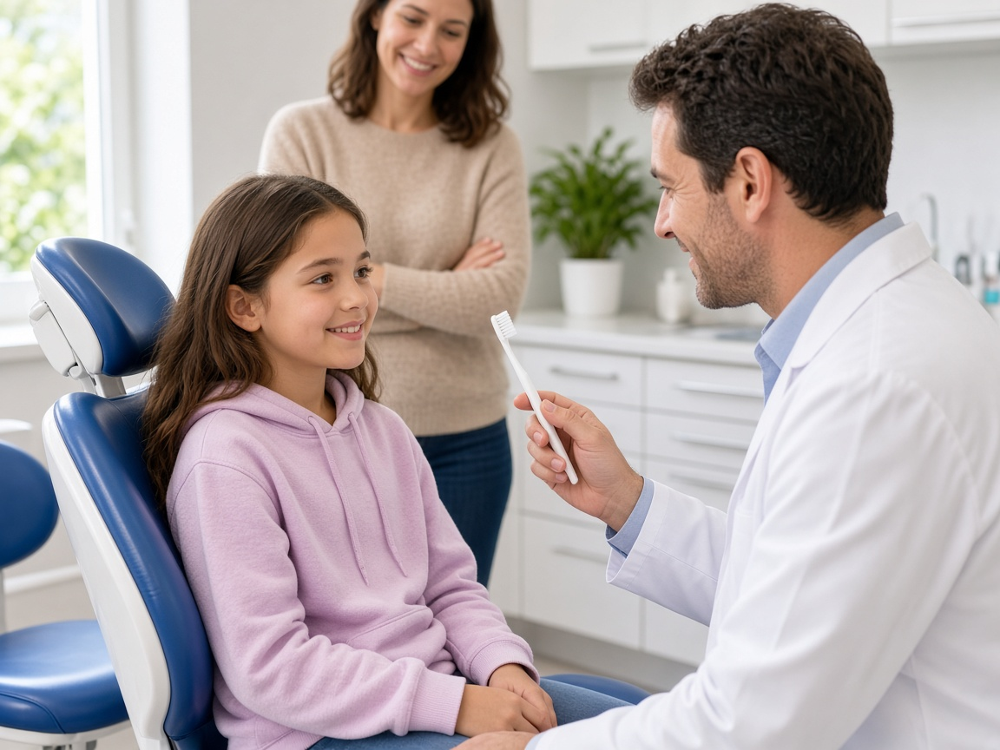
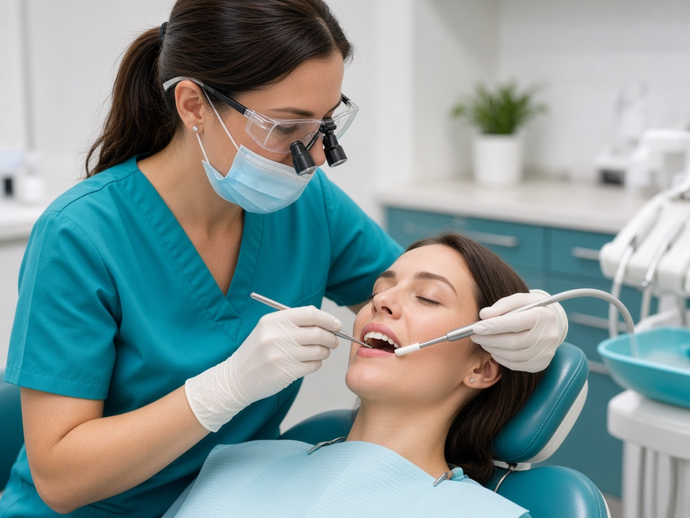

your smile deserves expert care
Community Outreach Dentistry at Ekaa Dentistry| Dental Health Programs| Oral Health Education| Preventive Dental Care
Home | Community Outreach
your smile deserves expert care
Home | Community Outreach
Community Outreach
At Ekaa Dentistry, we believe that quality oral healthcare should extend beyond clinic walls. Our community outreach initiatives include various dental health programs rooted in the philosophy that prevention, oral health education, and early intervention are essential for building healthier communities. Led by Dr. Chandni S Nair, our outreach programs aim to create awareness, improve access to preventive dental care, and empower individuals to take charge of their oral health.
Oral health plays a vital role in overall well-being, yet it is often overlooked until pain or complications arise. Through structured dental health programs, Ekaa Dentistry actively works to bridge this gap by making oral health education and basic preventive dental care accessible to diverse groups across Kondapur, Gachibowli, HITEC City, and surrounding areas of Hyderabad. Our initiatives focus on:
Ekaa Dentistry regularly conducts dental health programs in schools, focusing on children and adolescents. These oral health education initiatives are designed to instill good oral hygiene habits at an early age and identify dental concerns before they become serious. Key areas covered include:
These programs help reduce dental anxiety in children and encourage positive dental experiences from a young age.
Understanding the needs of families and working professionals, Ekaa Dentistry conducts dental health programs, including dental awareness sessions and screening camps in gated communities and residential societies. These programs focus on:
Such initiatives make preventive dental care convenient and accessible for residents, ensuring they receive the necessary oral health education.
As part of our social responsibility, Ekaa Dentistry actively participates in dental health programs that provide pro bono dental care initiatives for individuals with limited access to dental treatment. These efforts reflect our belief that essential dental care should not be denied due to financial or social constraints. Our pro bono services emphasize preventive dental care and include: Basic dental examinations, Preventive treatments, Oral health education and counseling, and Referral guidance for advanced care when required.
Dr. Chandni S Nair strongly advocates preventive dental care as a cornerstone of long-term oral health. Many dental problems develop silently and can be effectively managed if detected early. Our dental health programs emphasize: Regular dental check-ups, early gum disease management, oral health education, and awareness of the connection between oral health and systemic conditions. By promoting prevention through these initiatives, we aim to reduce the burden of complex dental treatments in the future.
All community programs conducted by Ekaa Dentistry focus on dental health programs that are: Educational, not promotional; Evidence-based and ethically driven; Designed to benefit participants first through comprehensive oral health education. There is no pressure to pursue treatment, allowing individuals to make informed decisions about their preventive dental care at their own pace.
Ekaa Dentistry welcomes collaborations with:
If you would like to organize dental health programs, oral health education initiatives, or preventive dental care sessions, our team would be happy to support your initiative.
Through consistent community outreach, Ekaa Dentistry strives to create a lasting impact—one smile, one family, and one community at a time. Our mission is to make ethical, preventive dental care accessible to all while promoting oral health education and engaging in various dental health programs. For outreach partnerships or program inquiries related to our dental health initiatives, please contact Ekaa Dentistry, Kondapur – Hyderabad.
Ekaa Dentistry actively collaborates with schools, gated communities, corporate parks, and residential associations in Kondapur, Gachibowli, HITEC City, and nearby areas to promote preventive dental care and enhance oral health education. Interested in hosting a dental awareness camp or screening? ✔ Free dental check-ups for children and adults ✔ Oral hygiene education sessions ✔ On-site screenings and referrals ✔ Customized dental health programs for schools and communities 📞 Contact Ekaa Dentistry today to schedule a community dental camp or awareness program. Together, let’s build healthier smiles through education and early prevention.
Ekaa Dentistry – Best Dental Clinic in Kondapur & Gachibowli Ekaa Dentistry is a trusted multispeciality dental clinic in Kondapur, Hyderabad, located near the Serilingampalle–Kondapur–Gachibowli corridor. If you are searching for a dentist near me, best dental clinic near Gachibowli, or a family dentist in Kondapur, our specialist-led team provides comprehensive and comfortable dental care for all age groups. Our services include general dentistry, cosmetic dentistry, root canal treatment, dental implants, braces and Invisalign, laser dentistry, pediatric dentistry, gum treatments (periodontics), oral and maxillofacial surgery, and in-house OPG X-ray diagnostics, ensuring accurate diagnosis and complete care under one roof. We proudly serve patients from Kondapur, Gachibowli, Serilingampalle, Masjid Banda, Hitech City, Madhapur, Hafeezpet, and nearby areas. With advanced dental technology, ethical treatment planning, and a strong focus on patient comfort, Ekaa Dentistry is committed to long-term oral health and confident smiles. 📍 Location: Serilingampalle, Kondapur, Hyderabad – Near Gachibowli
📞 Appointments: Call or book online at +91 9030121100
🕒 Timings: Mon–Sun | Specialist Consultations Available © 2026 Ekaa Dentistry. All Rights Reserved.
Powered by



